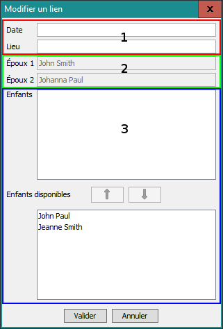

Ajouter un lien
Pour ajouter un lien, suivez une de ces méthodes :
- aller à ;
- ou cliquer sur
 Ajouter un lien... ;
Ajouter un lien... ;
- ou appuyer sur Ctrl+L
Maintenant, sélectionnez la première fiche à connecter (si elle n'est pas déjà sélectionnée),
puis cliquez sur la seconde.
Vous devriez voir cette fenêtre :

Les deux premiers champs (1) sont la date et le lieu du mariage. La date peut être incomplète.
Les deux champs en-dessous (2) contiennent les noms du couple.
La zone (3) vous permet d'ajouter/enlever des enfants issus du mariage. Pour ajouter des enfants,
sélectionnez les items dans la liste du bas puis cliquez sur le bouton  .
Pour supprimer des enfants, sélectionnez les items de la liste du haut puis cliquez sur le
bouton
.
Pour supprimer des enfants, sélectionnez les items de la liste du haut puis cliquez sur le
bouton  .
.
Une fois que vous avez terminé, cliquez sur Valider pour créer le
lien. Si vous avez cliqué avant d'avoir terminé, pas de panique, vous pourrez toujours revenir
éditer plus tard.
Maintenant, il devrait y avoir un lien entre les deux fiches et les enfants.
Prochain sujet : Éditer un lien
 Ajouter un lien... ;
Ajouter un lien... ;